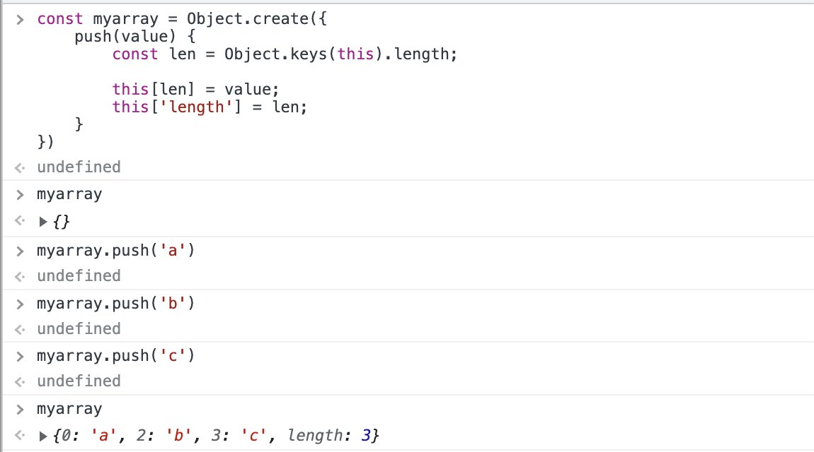
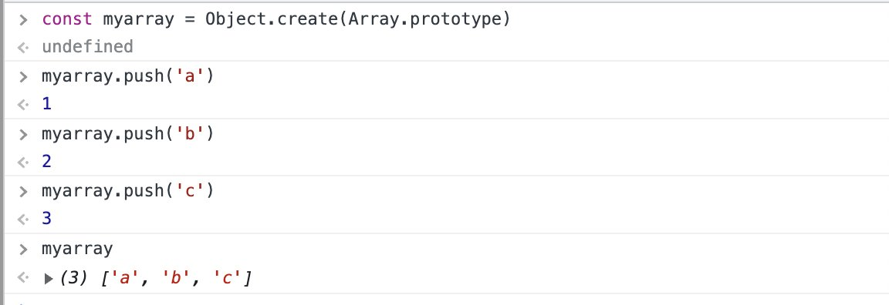

← ← ← 5/2/2022, 7:03:57 PM | Posted by: Felippe Regazio
Você já observou que o tipo de um Array em JS é "object"?
typeof [] === typeof {} // true
typeof [] // 'object'
typeof {} // 'object'
Ou seja, um array é um objeto?
Então: SIM. Segue a thread aqui que eu vou explicar porque isso é assim e como um array funciona na runtime 🤓
A primeira coisa que precisamos entender é que um Array não é um tipo, ele é uma estrutura de dados.
Um Array é uma Estrutura de Lista que pode se comportar como LIFO ou FIFO (veja os metodos pop & shift por ex).
A segunda coisa que precisamos entender é que em JavaScript QUASE tudo é objeto:
Temos os seguintes tipos primitivos: number , string , boolean , null , undefined , symbol and bigint. Todo o resto é um do tipo complexo: "object".
Ou seja um Array não pode ser de tipo primitivo - porque ele é um Array (duhhr nao diga rs). Mas os tipos complexos em JS são sempre objetos, então o Array só pode ser um objeto. E de fato é!
O array é um Objeto com prototype e metodos que constoem uma estrutura de dados pra vc
Qdo vc escreve:
const a = [ 'a', 'b', 'c' ];
A runtime entende
const a = {
0: 'a',
1: 'b',
2: 'c',
length: 3,
__prototype___
};
Essa estrutura é acoplada ao prototype array que tem getters, setters, metodos como pop, shift, map, etc... pra facilitar sua vida.
Por exemplo, abaixo está a implementação dummy de um objeto ao estilo Array que tem somente o método push e a propriedade length.
usamos o Object.create pra definir o prototype dele como quisermos e voilá, temos (grosseiramente falando) um """Array""":
Ou, se vc quiser ser o espertão/tona e reaproveitar o prototype que o JS deixou pronto, vc cria um objeto e diz que o prototype dele é o mesmo de um Array, e voilá: Vc terá um Array. Juro ó:
Então como saber se um Array é um Array mesmo em JS? Você usa o método:
Array.isArray([]); // true
Array.isArray({}); // false
Mas como tal bruxaria é possível? Agora que vc sabe como o maquinario funciona, vc intui que isso é um metodo no prototype que verifica isso pra vc
Concluindo: Um array é uma estrutura nativa em JS de lista LIFO/FIFO do tipo Objeto que contem em seu prototype metodos e propriedades que facilitam sua vida ao lidar com listas e tudo isso junto é um: Array. Como isso é implementado nativamente, convenciona-se a notação: [].